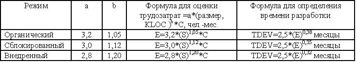
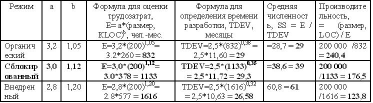
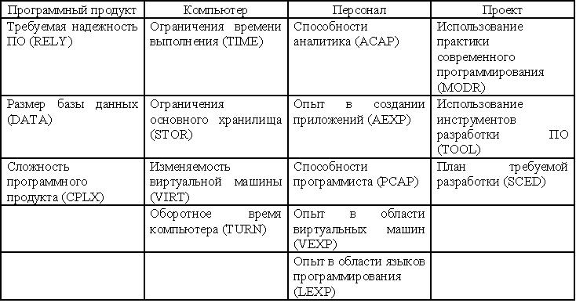
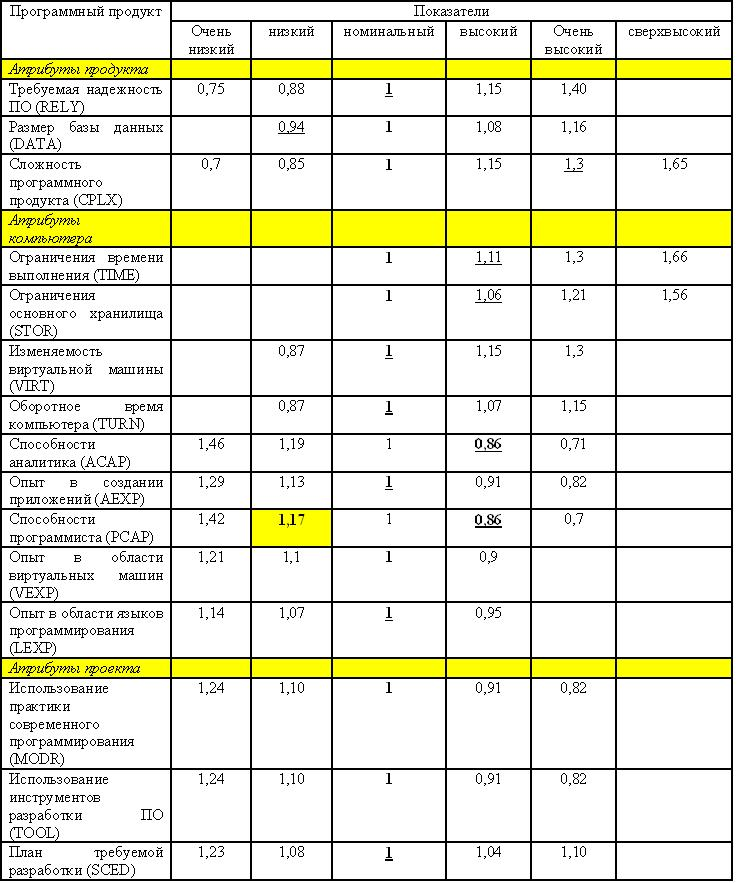
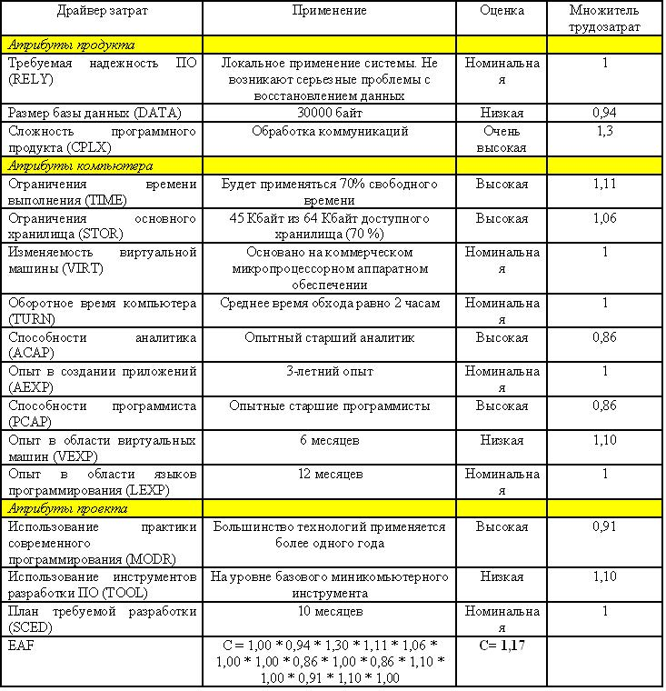

Промежуточная модель СОСОМО
В промежуточной модели СОСОМО используются значения размера и режимы, подобные тем, которые применялись в базовой модели. Дополнительно применяются 15 переменных, называемых драйверами затрат, с помощью которых могут быть объяснены и модифицированы уравнения трудозатрат (таблица рис.17.5). Идея, применяемая в этом случае, заключается в том, что характеристики данного проекта управляют затратами (трудозатратами).

Рисунок 17.5 - Формулы для оценки трудозатрат в промежуточной модели СОСОМО
Трудозатраты измеряются в человеко - месяцах (19 дней в месяце либо 152 рабочих часа в месяце, константы а и b могут определяться с помощью процедуры построения кривой по точкам (регрессионный анализ), причем данные проекта сравниваются с помощью уравнения. Большинство организаций не располагают массивом данных, достаточным для выполнения подобного анализа, начиная с применения дерева уровней.
В случае использования различных режимов проекты одинакового масштаба требуют различных трудозатрат.
Трудозатраты - Е, Время разработки - TDEV, Средняя численность персонала - SS.
SS = Е/ TDEV
Пример 4.
Пусть размер проекта 200 КLOC из таблицы рис.17.1 размер средний, режим сблокированный. Заполним таблицу на рис.17.6.

Рисунок 17.6 - Оценка трудозатрат в промежуточной модели СОСОМО для проекта в 200 КLOC
Драйверы затрат
Концепция, связанная с фактором корректировки трудозатрат (Effort adjustment factor, EAF), заключается в том, что он создает эффект увеличения либо уменьшения трудозатрат, а следовательно, и затрат, в зависимости от набора факторов среды.
Факторы среды иногда называются факторами корректировки затрат [C,s] либо драйверами затрат. Определение этого фактора-множителя происходит в два этапа.
На этапе 1 драйверам затрат назначаются числовые значения.
На этапе 2 происходит перемножение драйверов затрат, в результате чего генерируется фактор корректировки трудозатрат, т.е. С.
Фактор EAF представляет собой произведение факторов корректировки затрат.
EAF=С1*С2*....Сn
Факторы корректировки затрат могут сказываться на оценках графика и затрат проекта, изменяя их в 10 и более раз!
Драйверы затрат группируются в виде четырех категорий, как показано в таблице рис.17.7.

Рисунок 17.7 - Категории драйверов затрат в промежуточной модели СОСОМО
EAF= RELY * DATA * CPLX* TIME * STOR * VIRT * TURN * АСАР * АЕХР * РСАР * VEXP* LEXP* MODR* TOOL * SCED
Каждый драйвер затрат определяет умножающий фактор, который позволяет оценить эффект действия атрибута на величину трудозатрат.
Числовые значения драйверов затрат при их совместном перемножении образуют фактор корректировки, т.е. С,
Атрибуты программного продукта .
Некоторые из атрибутов, которые могут изменять величину затрат проекта, могут применяться наравне с самим продуктом или выполняться в ходе соответствующей работы. Ниже перечислены эти атрибуты:
- требуемая надежность - как правило, применяется в системах реального времени;
- размер базы данных - в основном применяется в приложениях обработки данных;
- сложность продукта - ограничения на время выполнения.
Атрибуты, связанные с аппаратными средствами.
Другие атрибуты имеют отношение к компьютерной платформе и могут применяться в качестве средства поддержки, а также при наличии работы, которая должна быть выполнена:
- ограничения времени выполнения - применяются в том случае, когда быстродействие процессора является ограниченным;
- ограничения основного хранилища - применяются в случае, когда размер памяти является ограниченным;
- меняемость виртуальной машины - включает аппаратное обеспечение и операционную систему на целевом компьютере;
- оборотное время компьютера - применяется при разработке.
Атрибуты проекта.
Атрибуты, связанные с практикой и инструментами:
- практика современного программирования - структурные или ОО-технологии;
- современные инструменты программирования - CASE-инструменты, хорошие отладчики, инструменты, используемые при выполнении тестирования;
- сжатие (или расширение) графика - отклонение от идеала всегда удручает, но меньшая степень отклонения всегда лучше, чем большая.
Атрибуты персонала.
Некоторые атрибуты применяются для описания исполнителей работ:
- способности аналитика;
- опыт в создании приложений;
- cпособности программиста;
- опыт в области виртуальных машин, включая операционную систему и аппаратное обеспечение;
- опыт в области языков программирования, включая инструменты и практику.
Другие драйверы затрат.
Несмотря на то, что наиболее часто с приложениями в рамках промежуточной модели СОСОМО связываются указанные выше четыре категории атрибутов, менеджер проекта может добавлять дополнительные атрибуты:
- изменяемость требований - некоторые из них являются ожидаемыми, однако большинство из них могут представлять значительную проблему;
- изменяемость машины, предназначенной для разработки - нестабильные ОС, компиляторы, CASE-инструменты и т.д.;
- требования безопасности - применяются для классифицированных программ;
- доступ к данным - иногда является весьма затрудненным;
- влияние стандартов и навязанных методов;
- влияние физического окружения.
Драйверы затрат выбираются в соответствии с их общей значимостью для всех программных проектов, причем они являются независимыми от размера проекта.
Поскольку драйверы затрат являются мультипликативными, в случае, если драйвер затрат не влияет на трудозатраты, его значение равно 1. При этом конечное значение С не изменяется. Подобные драйверы затрат называются нормальными либо "номинальными".
Например, если опыт в области языков программирования (LEXP) команды в рассматриваемой организации больше, чем аналогичный показатель в любой другой организации в этом городе, значение LEXP будет оставаться равным 1.
Это связано с тем, что превосходящие способности в области языков программирования нормируются в данной среде. Оценщик может выполнять поиск условий, при наступлении которых возрастает показатель трудозатрат (произведение всех драйверов затрат превышает 1, EAF>1) либо значение этого показателя уменьшается (произведение всех драйверов затрат меньше 1, EAF<1). При поиске применяется критерий "обычности" для данной среды. Как правило, объем трудозатрат увеличивает в случае, если применяется новая технология, команда разработчиков только что сформирована либо состоит из неопытных в данной области программистов, имеет место повышенная сложность технологической проблемы либо имеют место другие условия, отличные от стандартных. Если же требуется меньше трудозатрат, то это означает, что подобные проблемы были успешно разрешены ранее.
Сложность продукта (CPLX) может принимать значение 0,70 (очень низкое) и 1,60 (очень высокое). Этот показатель становится заметным в случае, если произведение драйверов затрат (С) оказывает влияние на оценку трудозатрат. Если показатель CPLX представляет только драйвер затрат, который не является номинальным, а физические трудозатраты составляют 24 чел.-мес. Уровень сложности может оказывать влияние на трудозатраты, он ранжируется в диапазоне от 16,8 (24 чел.-мес * 0,7) до 38,4 (24 чел.-мес * 1,6) чел.-мес.
Возможные значения исходных 15 драйверов затрат перечислены в таблице рис.17.8.

Рисунок 17.8 -Значения драйверов затрат при разработке ПО в рамках модели СОСОМО
Существуют отдельные таблицы оценки драйверов трудозатрат сложности продукта.
Примеры реализации промежуточной модели СОСОМО
Ниже приводятся два примера промежуточной модели СОСОМО. В первой модели применяются нормальные значения для драйверов затрат; в другой модели увеличиваются оценки для показателей АСАР и РСАР.
Пример 5.
Рассматривается программный проект внедренного режима, оцениваемый показателем в 10 KLOC, реализующий функции обработки коммуникаций в коммерческом микропроцессоре.
- Формула для внедренного режима обеспечивает номинальное значение трудозатрат: Еn = 2,8+(10)1,20 = 2,8*15.85 = 44 человеко-месяца.
- В результате оценивания среды проекта получаются результаты, обеспечивающие вычисление вариантов значений множителя драйвера затрат. Эти значения перечислены в таблице рис.17.9.
- Фактор корректировки применяется по отношению к номинальным трудозатратам: Е = 2,8*(10)1,20 * С = 44 * 1,17 = 51 человеко-месяц

Рисунок 17.9 - Значения драйверов затрат для промежуточной модели СОСОМО, пример 5
Пример 6
При выполнении оценки проекта получается значение, равное 44 человеко- месяцам (SM). Если при выполнении проекта привлекается более квалифицированный персонал, оценки РСАР и АСАР уменьшаются от номинальных (1,00) до высоких (0,86). Однако затраты на персонал возрастают с $5000 до $6000 из расчета на один SM. Предположим, что значения других драйверов затрат будут номинальными (1,00).
Фактор корректировки трудозатрат (EAF) = С =
RELY * DATA * CPLX * TIME * STOR * VIRT * TURN * ACAP * AEXP * PCAP * VEXP * LEXP * MODP * TOOL * SCED = 1,00 * 1,00 * 1,00 * 1,00 * 1,00 * 1,00 * 1,00 * 0,86 * 1,00 * 0,86 * 1,00 * 1,00 * 1,00 * 1,00 * 1,00 = 0,74
Скорректированный показатель человеко-месяцев: 44 SM * 0,74 = 32,6
Разница в затратах:
44 SM * $5000 /SM = $220000
32,6 SM * $6000 /SM = $195600Разница: $220000 - $195600 = $24400
Вывод
В настоящем примере использование услуг более квалифицированного персонала обходится дешевле, несмотря на возросшие при этом расходы на оплату труда.
Рассмотренные 15 драйверов затрат способствуют лучшему использованию сред, в которых отсутствуют либо оказывают незначительное влияние хронологические данные, они не могут применяться одинаковым образом в нескольких организациях либо даже в одной организации на протяжении длительного периода времени.
После того как станут доступными фактические данные, с их помощью будут изменены исходные данные, а модель будет калиброваться до тех пор, пока она не будет полностью соответствовать данному типу приложения и данной организационной среде либо среде и приложению одновременно. Многие производители поддерживают автоматизированные инструменты, предназначенные для выполнения оценок, имеющих заданные размер и сложность. Многие из этих инструментов обеспечивают автоматизированную поддержку добавления фактических данных и калибровку модели путем изменения показателя, коэффициента, значений драйвера затрат либо всех трех параметров одновременно.